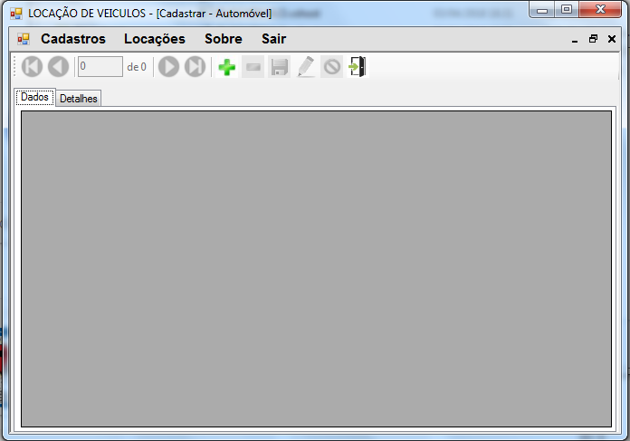

Projeto Locadora de Automóveis
Projeto relativo à disciplina Linguagem de Programação 2. Neste prjeto foi possivel desenvolver habilidades relacionadas à:
- Linguagem de Programação Visual Basic.NET
- Banco de Dados Microsoft SQL Server.
- Programação orientada a eventos.
- Programação orientada a Objetos.
- Conhecer o Ambiente de Desenvolvimento Integrado da Microsoft, o Visual Studio.